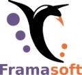

Dégooglisons Internet
, la timeline
Juin 2013
Révélations d'
Edward Snowden
sur les programmes d'espionnage de masse américains et britanniques.
Septembre 2013 à septembre 2014
Dégooglisation de Framasoft
(voir la
conférence des RMLL 2014
)
5 février 2014
Lancement de Framabag
Juillet 2014
Pré-annonce de la campagne Dégooglisons Internet
aux RMLL de Montpellier
7 octobre 2014
Annonce de la campagne
7 octobre 2014
Lancement du service Framasphère
11 novembre 2014
Annonce de Framindmap
26 nov 2014
Nouvelle version de Framadate
11 décembre 2014
Lancement de la campagne de financement de MyPads
13 mars 2015
Lancement de Framagit
16 mars 2015
Lancement de Frama.link, Framapic et Framabin
5 mai 2015
Lancement de Framabee
18 juin 2015
Lancement de Framagames
22 juin 2015
Lancement de Framabookin
7 juillet 2015
point d'étape aux RMLL de Beauvais
5 octobre 2015
Annonce de la saison 2 de Dégooglisons Internet
5 octobre 2015
Lancement de Framadrive
6 octobre 2015
Annonce de MyPads
7 octobre 2016
Lancement Framaboard
8 octobre 2015
Lancement de la nouvelle version de Framadate
9 octobre 2015
Lancement de Framadrop
23 octobre 2015
Partenariat de promotion du documentaire « Les Nouveaux Loups du Web »
23 décembre 2015
Lancement de Framacarte
10 mai 2016
Lancement de Framateam
7 juin 2016
Lancement de Framavox
24 juin 2016
Opération « Dégooglisons » à Nevers
1er septembre 2016
Lancement de Framinetest
9 septembre 2016
Lancement de Framemo
3 octobre 2016
Annonce de la saison 3 de Dégooglisons Internet
3 octobre 2016
Lancement de Framalistes
4 octobre 2016
Lancement de Framanotes
5 octobre 2016
Lancement de Framaforms
6 octobre 2016
Lancement de Framatalk
7 octobre 2016
Lancement de Framagenda
10 octobre 2016
Lancement de MyFrama
12 octobre 2016
Naissance du collectif CHATONS
11 janvier 2017
Lancement de Framaestro
22 Mars 2017
Lancement de Framaslides
12 juin 2017
Lancement de docs.framasoft.org